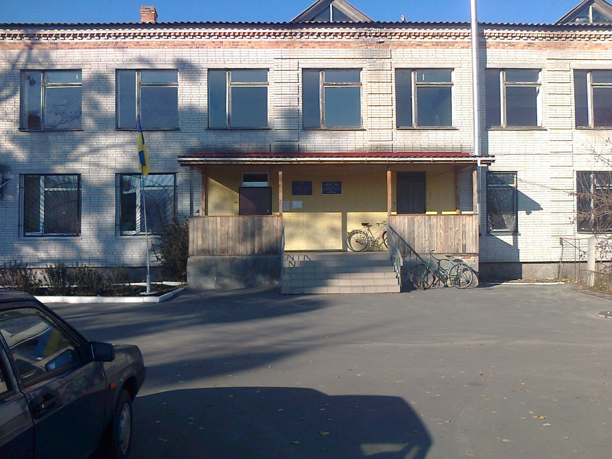

КАТЮЖАНСЬКА СІЛЬСЬКА РАДА
ВИШГОРОДСЬКОГО РАЙОНУ
КИЇВСЬКОЇ ОБЛАСТІ
ТРЕТЯ СЕСІЯ СЬОМОГО СКЛИКАННЯ
Р І Ш Е Н Н Я
ПРО ЗАТВЕРДЖЕННЯ СТРУКТУРИ
,
ЧИСЕЛЬНОСТІ АПАРАТУ СІЛЬСЬКОЇ
РАДИ НА
2016 РІК
Відповідно до ст. 144 Конституції
України , проекту Закону
України « Про державний бюджет на
2016 рік»
керуючись статті 42, статті 51 Закону України
« Про місцеве самоврядування в Україні» сесія
сільської ради
В И Р І Ш И Л А :
1.Затвердити структуру та чисельність апарату Катюжанської
сільської ради на 2016 рік
в такому складі :
1. Сільський голова – 1 одиниця
2. Секретар виконавчого комітету
-1 одиниця
3. Головний бухгалтер -1 одиниця
4. Спеціаліст І категорії -1 одиниця
5. Спеціаліст ІІ категорії -2
одиниці
6. Завідувач ВОБ – 1 одиниця
7. Секретар - друкарка , діловод -1 одиниця
8. Касир – 1 одиниця
9. Техпрацівник -0,5 одиниці
10. Прибиральник території -0,5 одиниці
11. Опалювач -1 одиниця
2..
Затвердити штатний розпис
з 01.01.2016 року в кількості 11
штатних одиниць та
затвердити
витрати на утримання апарату сільської ради у сумі 1018900,00 грн.
3.Контроль за виконанням цього
рішення покласти на постійну комісію з питань
місцевого бюджету , фінансів,
соціально-економічного та культурного розвитку села..
Сільський
голова
Л.І.ЗАВОДСЬКА
с. Катюжанка
. №22-03-УІІ
24.12.2015р